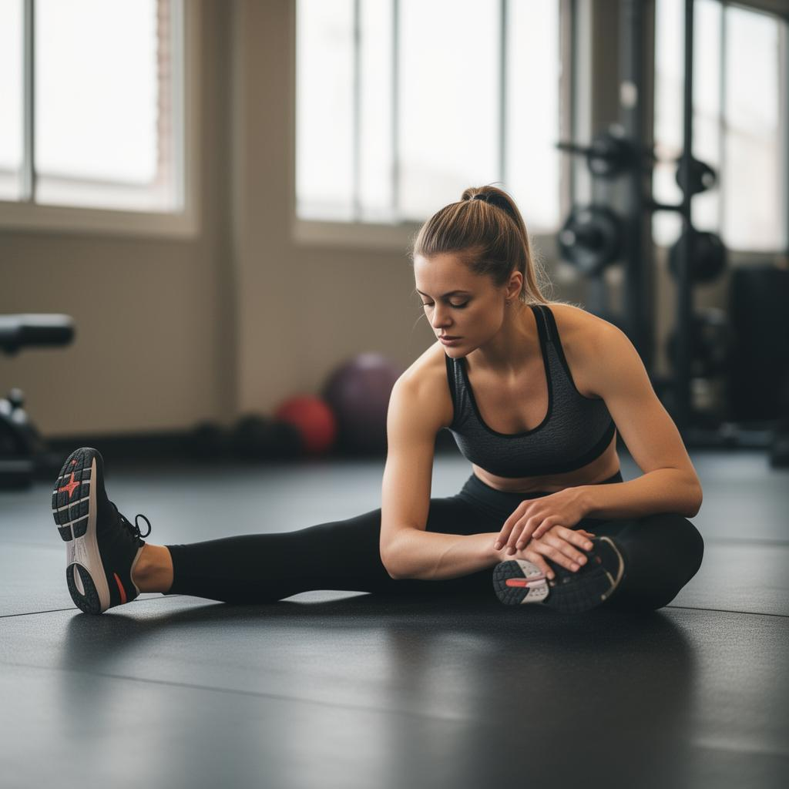
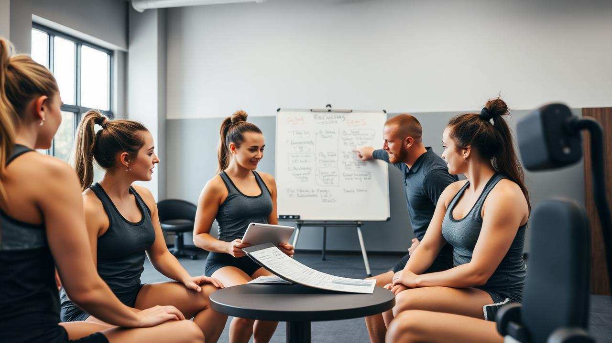
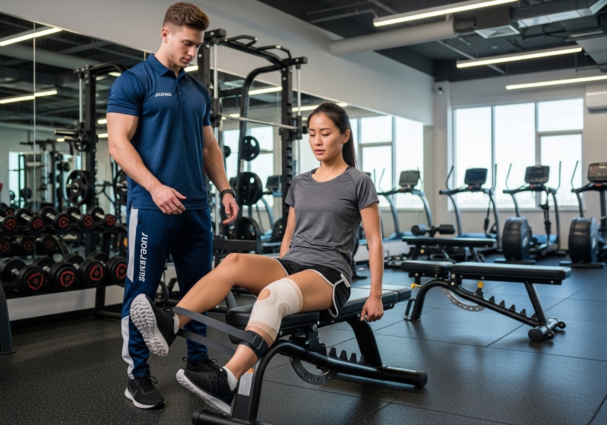
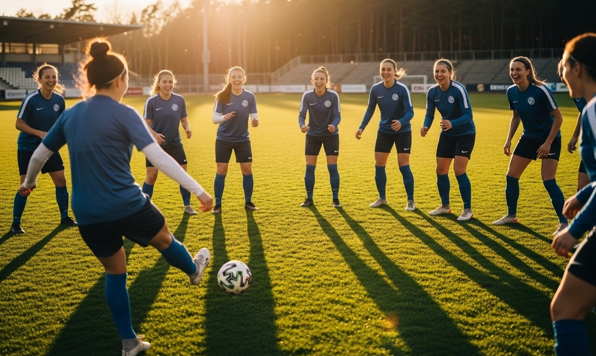

Injury Recovery Guides
Step-by-step protocols for safe return-to-play after common sports injuries.
Access research-informed tools designed to improve athlete recovery, mental health, and team culture.

A curated collection of research-backed resources designed for real athletes facing real challenges.
Step-by-step protocols for safe return-to-play after common sports injuries.
Tools for managing performance anxiety, burnout, and emotional wellbeing.
Breathing exercises, mindfulness practices, and recovery rituals for athletes.

Resources addressing unique challenges female athletes face in training and recovery.
Step-by-step training sessions built for team captains and coaches. Focus on injury recovery culture, mental health awareness, and team communication.



A structured session on injury prevention and recovery culture that any coach can run.
A communication and support framework for when athletes return from injury.
Weekly check-in templates that help captains and coaches monitor team wellbeing.
Exercises and frameworks to build trust, openness, and accountability.
Three simple steps to start improving athlete wellbeing today.
Browse and download from our curated library of athlete wellness tools and guides.
Use our step-by-step workshop formats to deliver impactful sessions with your team.
Monitor athlete wellbeing over time using our CARE assessment framework.
Start with our free resources or take the full CARE assessment to identify what your team needs most.